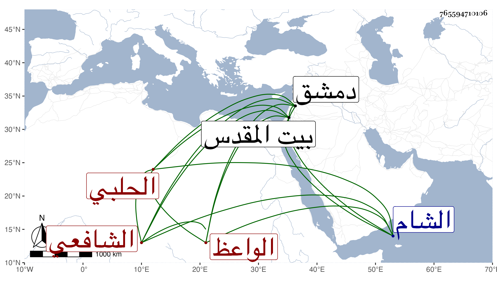

0902Sakhawi.DawLamic.ITO20230111-ara1.EIS1600.765594710106
Biography ID: 765594710106
512
أحمد بن محمد بن محمد بن عبية وهو ابن محمد بن محمد بن أبي بكر بن عبية حسبما رأيته بخطه الشهاب الحلبي الأصل المقدسي المولد الشافعي الواعظ نزيل دمشق ويعرف بابن عبية . برع مع نظم جيد وخط حسن وخبرة بالوعظ ورياضة ورأيت خطه في سنة أربع وستين بالشهادة في إجازة النوبي كابنه وأثنى المشهود له عليه بالفضيلة وجودة النظم وكذا رأيت خطه في سنة ثمان وثمانين ومما نظمه تخميس البردة وولي قضاء القدس وقتا وامتحن في حين الترسم على كنيسة اليهود وزيد في إهانته وآل أمره إلى أن خلص ورجع فأقام بالشام يسترزق من الوعظ بل قرأ على البرهان بن مفلح صحيح مسلم ومما كتبته عنه قوله في كائنته المشار إليها واستغاثته أولها :
| يا رب مس الضر قلبي وانكسر | فاجبر لكسري أنت أرحم من جبر |
| وأغث فقد أمسيت منقطع الرجا | مما سواك وما بغيرك ينتصر |
| ناداك في الظلمات يونس ضارعا | وكذاك أيوب وقد عظم الضرر |
